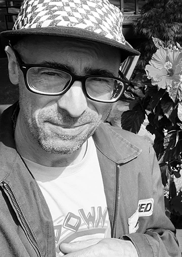
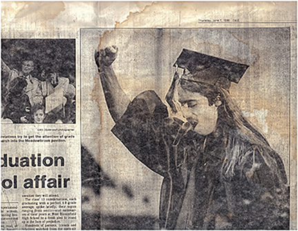
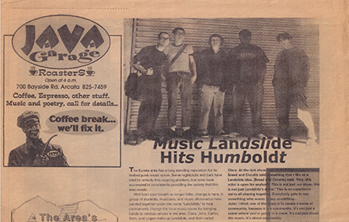

Collaborators
“Not everything that is faced can be changed, but nothing can be changed unless it is faced.” -James Baldwin
“Only in freedom can the fifth sacred thing we call spirit flourish in its full diversity.” -Starhawk
People should be recognized for coming together and making it work; building, creating, communicating and supporting something. Whether it’s because it’s simply needed, or because they want to join together and feel good about participating in anything that gives them meaning, it’s our time and our intentions that will make a difference. These efforts and connections are far more valuable than currency or your name on the board as Employee of the Month. Even if money is involved, there are ways to make it more than an exchange of a service for a fee (or a job) and I believe in that. Basically, it’s called creating relationships and basically it’s why I would say a standing hierarchy is no model at all to organize a society around.
Some days it sure feels like a minor miracle we can do anything not simply for profit. I know people are involved in many amazing collaborations for the love of it that are magic, as well as a matter of survival at times, also magic. That is how I manage to bear witness, participate and still believe in people. Behind all the unnatural death and destruction caused by abuse of power and privilege, people are figuring out impossible ways to manage and even thrive through the worst of situations. Sometimes with enough vision, work and grace they are helping us all move forward and hopefully help you and yours avoid the onslaught whether you thought you were on the same side or not.
When people create projects out of desire as much as necessity, regardless or even despite the rules, there is something there for sure when considering the question of power. We all can help and even small gestures regarding this project have helped me a lot.
With that sentiment, I wanted to make sure to carve out a place to say if you want to “collaborate” on this project, and you have ideas, let’s connect. For those of you who already have helped, THANK YOU! I have got a lot out of it already and- it’s just getting going.
If you have helped out with an interview as the subject or with advice or editing, again, thank you. With contacts, design or website work, photos, promotion, financial support and in many other ways, you are awesome! Also, if you took me up on the offer to give a shout out via a link and/or a little bio. THIS IS THE SECTION FOR THAT!
With the name of your own business or project, this is the section where those links for “contributors” can be found. AND WHATEVER YOU DO DON’T GIVE UP ON BELIEVING IN WHAT WE CAN DO WHEN WE ARE BOLD AND COURAGEOUS IN OUR IDEAS, EXPRESSIONS OF BEING AND FEELING. OUR EMPATHY, OUR PROPOSALS, OUR ACTIONS AND OUR SOLIDARITY MATTER MORE THAN EVER. STAY SMART AND KNOW YOU MATTER.
READ MORE ABOUT HOW TO STAY INVOLVED AND MY MOTIVATIONS BEHIND THIS PROJECT IN THE “MUTUAL SUPPORT” SECTION!
Links
SOLIDARITY FOREVER!
Clara Hardie (she/they) lived at Trumbullplex for the first three years of her Detroit life post-University of Michigan, where she/they studied Social Science Theory. Clara began loving and collaborating with Jhon Clark while booking shows at Trumbullplex around 2009. Clara runs Youth Volume, and Growing Equitable Music Studios, to expand studio diversity, access and inclusion ASAP while nurturing violin and cello musical changemaker/students ages 5-18. http://www.youthvolume.org/
Anna (she/her) is a full-stack software engineer based in Marquette, MI who loves clean, simple, & beautiful design. Anna also enjoys editing, responsive web design, & crafting brand identities. She built the website for Upside Down Culture.
When she's not working, Anna can be found rock climbing around the Upper Peninsula of Michigan, reading a solarpunk novel in one of her hammocks, meal prepping, doing yoga, rowing on Lake Superior, canoe camping, painting a birthday card for someone, or playing games with friends and family. Do you need a website or a local web developer? Get in touch.
I was born in Detroit in 1971 and moved back to the city as an adult in 1999. I lived at the Trumbullplex in 2000-2002 and stayed intermittently involved up until the time I moved away from Detroit in 2022 and began the project of documenting the Trumbullplex story. I now live in Marquette (in the Upper Peninsula of Michigan on Lake Superior) with my partner and 2 kids.
I am cis gendered white man without a college degree and do not consider myself to have ever been a professional anything. I am or have been: a survivor, a poet, a punk, a guitar player, an activist, a builder, a reclaimed material enthusiast, an anarchist, archivist, self employed, handyman/carpenter, a caregiver, a twin Dad, a “homemaker”, vinyl record collector and a proud slinger of books and records.
I have known profound grief, trauma, am acquainted with violence, end of life care and I have made mistakes. Mostly I am so grateful I am still here and my story is intertwined with the story of “radical” communities like the Trumbullplex.
I have been involved in the following collectives and or projects: the landslide collective, Food Not Bombs, Free Arcata Radio, the Crowaton, Trumbullplex, Trumbullplex Theatre Collective, Detroit Summer, Critical Moment, Upsidedownculture, and a handful of bands and other short lived activist projects.
I have many particular concerns regarding the times we are living in and the fact I am a “distance thinker” I am often looking for ways to prepare for the worst and hope for the best, while trying to not be a bore and offering what I can to the network. I would say, though I value solitude and being off in the woods on my own, I am pro social and have sought out projects or opportunities for involvement in community building my entire adult life. To put it mildly, I am highly critical of the U.S. while appreciating what many of my fellow citizens have contributed to humankind.
I believe my work collecting stories and related research is valuable because I firmly believe creativity is where “our” power lies and when we are able to creatively collaborate regarding how, when, where and why we connect, not based on the dictates of the dominant paradigm we are challenging the status quo. We will have already been doing the work necessary to help solve some of the problems we are facing if and when we join together to reveal the secrets of our individual and communal triumphs and tragedies. This power, this story is ours to tell and use.
Some are able or must give their lives in order to try and effect change and some play more supportive, perhaps even reflective roles.. and that is a lot more of a thought than I care to expound upon here, it’s just that I am somewhere in that spectrum and I have been inspired by so many. I have tried my best to do my part as a changemaker even to the point of irritation to others, I’m sure. It’s been a good life so far, exceptional even.
More recently there’s been a desire to look back and know where I came from and name it. I don’t believe it is necessary nor does it contain me however it has allowed me to recognize myself in others. I believe my actions have an effect and are valuable (and so are yours) and complacency is akin to death of the spirit.
It is my hope this project reaches others and furthers our self identification with one another and helps us in personal ways to know more about what it may take to repair and transform life as we know it into life as we dare to to dream it. This is not for the ambivalent nor those who polish their blinders, willing to stand on the side of human misery and make excuses in favor of what I am against: fear, greed, apathy and hate which serves those who crave power. I do not believe in neutrality though I do embrace contradictions and complexity. I think it is healthy to be for and against things and if you are watching the game you are a part of the game. Politics touches everyone and while some are caressed others are choked. I know it often feels pointless to be concerned with anything outside of one's immediate sphere of influence and that doesn’t make you necessarily a pawn but I believe we are being used daily unless we are also daily doing something a little more out there and as of late this is what I do in that regard.
Upsidedownculture.org is also the home for yet another archive and deep within its bowels lie stories of when I was a youngster and later when I just kept really good company. I will share my time participating with others in community building in Kalamazoo and Arcata, mostly around music, art and activism. The flyers and other ephemera from those times will live here and related blogs will help tell those stories in three very special places to me which I am grateful to have called home for a period.
Ideally this section could also help document other spaces like 404 Willis or Zoots or better yet provide links to those who are already working on archiving spaces that relate to the Trumbullplex story…nudge nudge.
Kalamazoo Flyer Archive
How I Became a Kalamazoo DIY Punk
I graduated from high school with a fist in the air—no, literally. After three years, I encountered some trouble with the West Bloomfield High administration (and to clarify, I certainly did not grow up in West Bloomfield). Ultimately, I came to an agreement, primarily with the Vice Principal, to forgo my senior year classes at their institution. Instead, I would transfer the final credits I needed to graduate by taking courses through Indiana State University correspondence courses, allowing me to earn my diploma and participate in commencement. When that time finally arrived, I was definitely excited that chapter of my life was over, and looking every bit the part of an 18-year-old thrasher, I proudly raised my fist in victory, which ended up gracing the cover of the local newspaper. Ha, what a joke.
At that time, I had a girlfriend, worked at a restaurant, and briefly delivered pizzas. I attended shows and partied with many friends. So many great shows! I saw Kreator, Voivod, Cro-Mags, M.O.D., Sepultura, Excel, King Diamond, Exodus, Agnostic Front, Slayer, and all that crossover genre and much more. I don’t have many flyers from that era though, mostly ticket stubs, AND this post is supposed to focus on Kalamazoo anyhow, so I digress...
The Landslide Collective
This group was like a United Colors of Benetton ad meets a real life D.I.Y. music booking collective on a mission. Landslide existed for a short period and organically came together to not only fill a need to entice more touring bands to stop in Arcata CA, on their way between larger West Coast cities to play primarily all ages shows for us but to simultaneously teach one another and youth how to book and put on successful shows. Dom was from Oakland and was African American, Los was Latino, Clara was white and from SW U.S., I was white and from Michigan and Logan was a local kid who was Filipino/Swedish, and a bit of a handful. If nothing else we had the diversity inclusion thing going for us. Actually to a point I would say it was quite successful, and kinda a funny project. It was fun though and unfortunately didn’t end up with long lasting relationships which one hopes for which was probably my fault.
Community Projects Jhon Has Been Involved In
I hope to someday share stories and flyers from groups like Detroit Summer as well as band stuff I was also involved in which if in Detroit were tangential to or overlapped in some ways with the Trumbullplex. Stay tuned to see what pops here or in blogs.